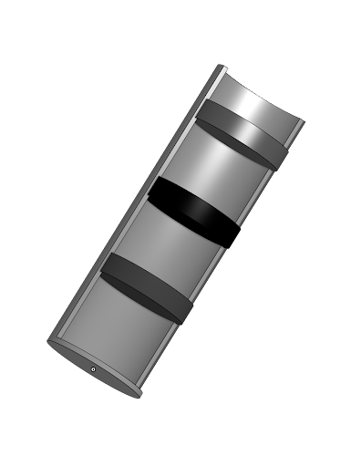

Jeremiah A, Amilliyon W, Valentina D, and Benie N
Harmful concentrations of Mercury have accumulated
within the tundra as a result
of improper disposal of
Gas and Oil waste.
pushing the Narwhals out of their
natural habitat.
insert text here
